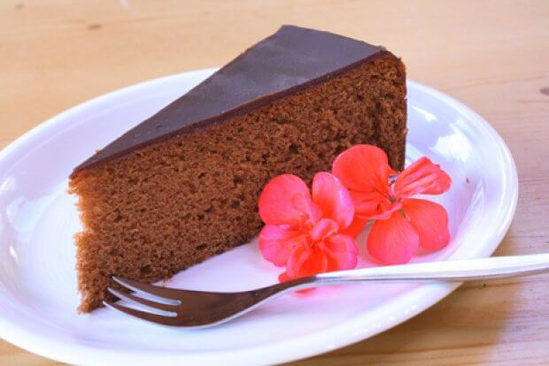
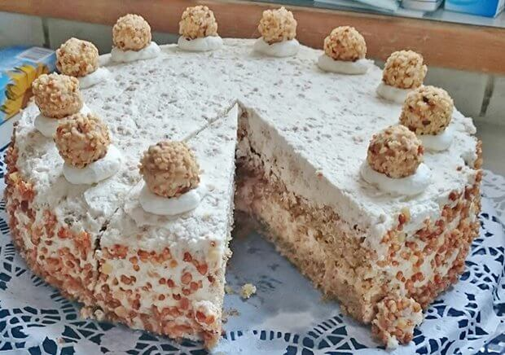

Sachertorte

Zutaten für 12 Portionen
| Menge |
Angabe |
Zutaten |
| 180 |
g |
Butter |
| 150 |
g |
Staubzucker |
| 6 |
Stk |
Eier |
| 180 |
g |
Schokolade |
| 180 |
g |
Mehl |
| 150 |
g |
Kristallzucker |
| 1 |
Pk |
Vanillezucker |
| 1 |
Prise |
Salz |
| 0.5 |
TL |
Backpulver |
Zutaten für die Glasur
| Menge |
Angabe |
Zutaten |
| 150 |
g |
Schokolade |
| 200 |
g |
Kristallzucker |
| 125 |
ml |
Wasser |
Zutaten zum Bestreichen
| Menge |
Angabe |
Zutaten |
| 200 |
g |
Marillenmarmelade |
Zutaten für die Form
| Menge |
Angabe |
Zutaten |
| 1 |
EL |
Butter |
| 4 |
EL |
Mehl |
Zubereitung
- Backrohr auf 180°C, Ober- und Unterhitze vorheizen. Schokolade im Wasserbad schmelzen. Die Eier in Dotter und Eiklar trennen. Eiklar zu Schnee schlagen, Kristallzucker wärhend des mixens einrieseln lassen.
- Das Mehl mit dem Backpulver vermischen.
- Weiche Butter schaumig rühren, geschmolzene Schokolade unterrühren, Staubzucker, Vanillezucker, Salz und Dotter einrühren bis eine cremige Masse entsteht. Zuletzt Schnee, Mehl und Backpulver unterheben.
- Tortenform Durchmesser 25, mit Butter befetten und mit Mehl ausstauben. Die Schokoladenmasse einfüllen. Torte ca. 20 Minuten bei 180°C backen und dann 40 Minuten weiter backen bei 160°C, jeweils Ober- und Unterhitze.
- Nach dem Backen etwa 10 Minuten in der Form auskühlen lassen und anschließend aus der Form lösen und komplett auskühlen lassen.
- Marmelade in einem Topf erwärmen (so lässt es sich leichter streichen) und die Torte an der Oberseite und an den Rändern damit bestreichen.
- Für die Glasur: Wasser mit Kristallzucker bei starker Hitze ca. 5 Minuten kochen und abkühlen lassen. Schokolade im Wasserbad schmelzen und mit dem warmen Zuckerwasser nach und nach verrühren. Die Glasur vor dem Auftragen leicht abkühlen lassen - dabei immer wieder umrühren - danach die Torte damit bestreichen. Dabei ist zügiges Arbeiten gefragt.
Giotto-Torte

Zutaten für 1 Portion
| Menge |
Angabe |
Zutaten |
| 4 |
Stk |
Eier |
| 150 |
g |
Zucker (braun) |
| 150 |
g |
Butter (weich) |
| 100 |
g |
Haselnüsse (gemahlen) |
| 100 |
g |
Mandeln (gerieben) |
| 50 |
g |
Mehl |
| 1 |
Pk |
Backpulver |
| 40 |
Kugel |
Giotto |
| 750 |
ml |
Schlagobers |
| 2 |
Pk |
Sahnesteif |
Zubereitung
- Die Butter mit dem Zucker schaumig rühren und dann die Eier dazu verrühren. Haselnüsse, Mandeln, Mehl und Backpulver unterheben. Nun die Masse in eine runde Backform geben und bei 180°C, bei Ober- und Unterhitze ca. 40 Minuten backen.
- Wenn der Kuchen fertig gebacken und abgekühlt ist, schneidet man ihn horizontal auseinander. Schlagobers mit Sahnesteif steif schlagen und die Hälfte in der Kuchenmitte verstreichen.
- Die Giotto darin verteilen und ein paar für die Dekoration am Kuchen aufbewahren. Dann die 2. Tortenhälfte wieder aufsetzen und mit dem restlichen Schlagobers den Kuchen überziehen. Mit den Giotto verzieren.